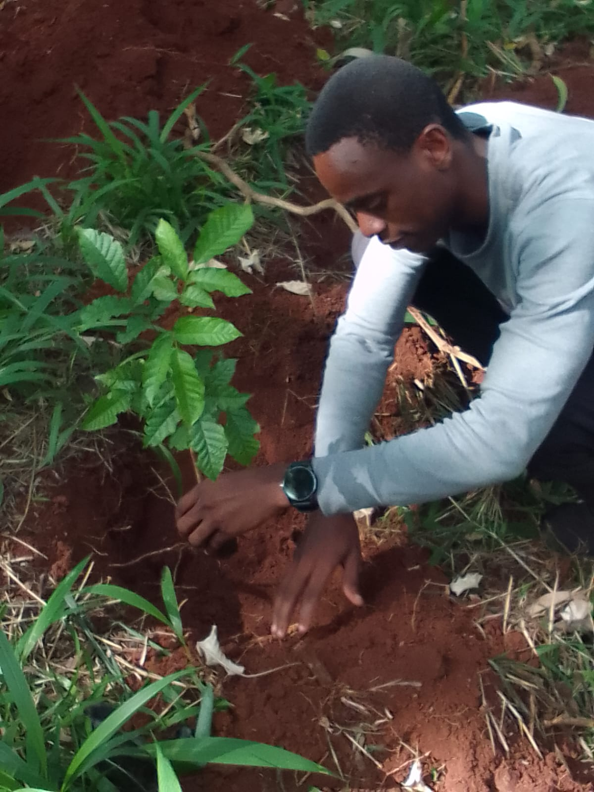
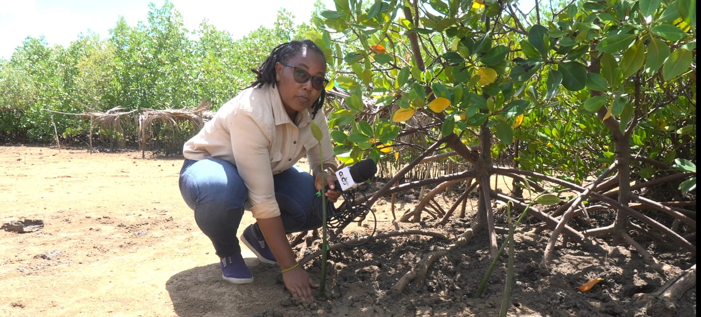
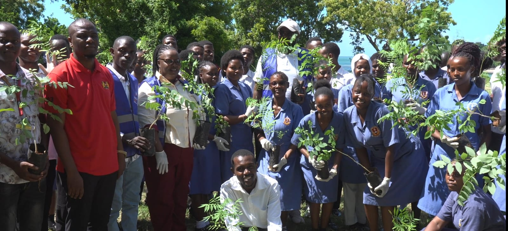
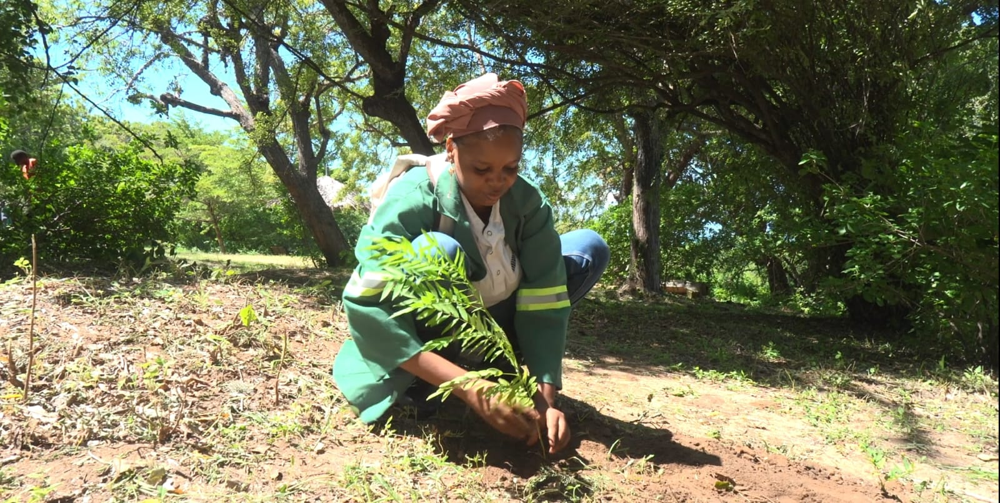

ALBUM
We have participated in various tree planting projects.
PHOTO 1

Long before co-founding Greening for Justice, the journey began with a simple act of planting a tree. While still a student at the University of Nairobi, this moment reflected a commitment to environmental stewardship that continues to inspire action today. It is a reminder that lasting change often starts with one person, one seedling, and one decision to make a difference. 🌱

Coco FM Journalist 🎙️🌱 A heartfelt appreciation to the journalist from Coco FM for going beyond reporting and actively participating in environmental conservation. By planting trees and raising awareness, you are helping amplify the message that protecting our environment is a shared responsibility. Thank you for making a difference.

🌱 A big congratulations to the students of KMTC – Kilifi Campus for their outstanding commitment to environmental conservation. Your dedication to tree planting and climate action demonstrates that young leaders have the power to create a greener, healthier future. Keep up the excellent work!

We applaud the County Government of Kilifi employee for actively championing environmental conservation through hands-on tree planting efforts. Your leadership and commitment inspire communities to take meaningful action in protecting our natural resources for future generations.
ALBUM
We have participated in various projcts and still continue to impact lives ith cleaner environment.
What We Do
- Promote tree planting and forest conservation.
- Educate communities about environmental protection.
- Encourage recycling and waste management.
- Support initiatives that reduce pollution.
- Advocate for sustainable use of natural resources.